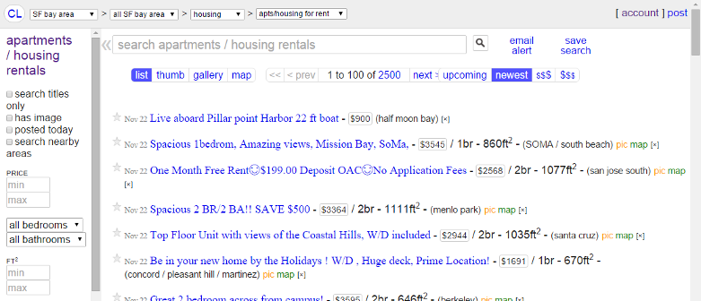
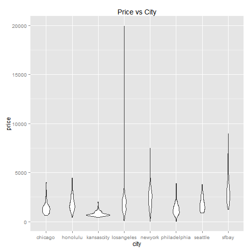

Link to app: https://sueyic.shinyapps.io/shinyapp_apartment_pricesize_predictor
Sue Chew
Link to app: https://sueyic.shinyapps.io/shinyapp_apartment_pricesize_predictor
The prediction model was trained from craigslist posts obtained from the "apts/housing" category, for several cities in the United States. These are posts of residential apartments or housing for rent.
Example: "apts/housing" category for San Francisco bay area

More detailed writeup: Data processing report
